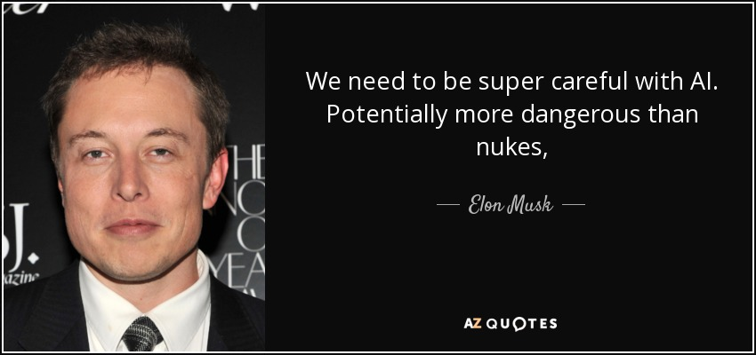

With how technology today has evolved so much so fast the worry of a "real world" Sky Net from
Terminator. Some miss leading information that connects to this point has been shared recently.
This would be the Facebook AI incident where facebook reset 2 of there AI systems for failed
programming. Link Here